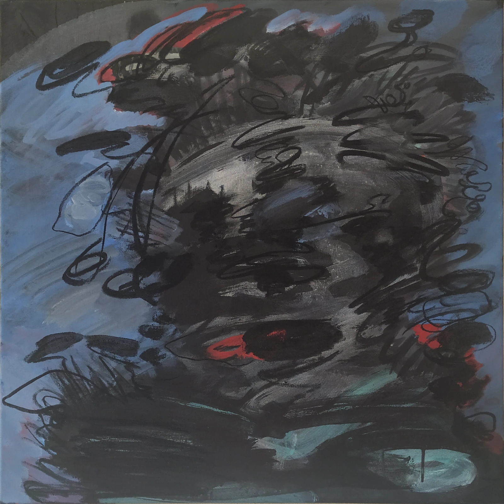
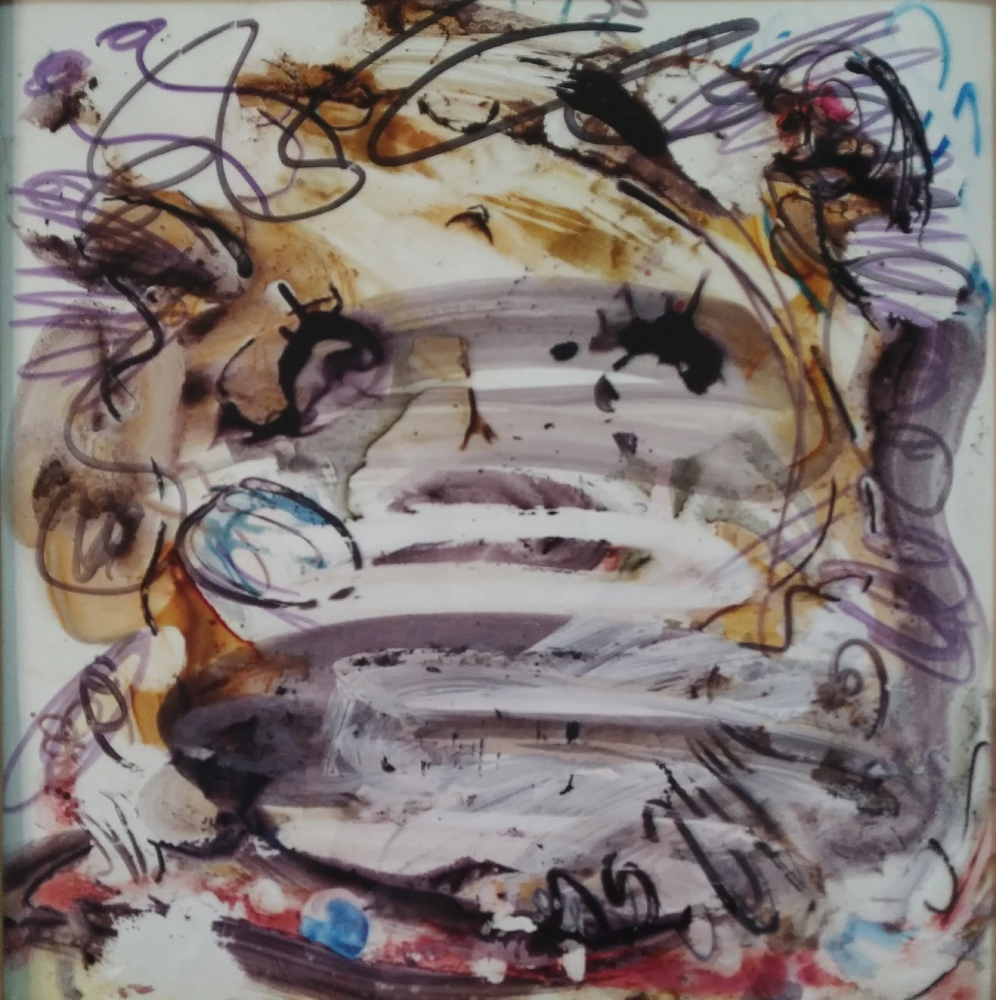

This image forms the conceptual entrance to the digital exhibition of Dutch contemporary artist John Boelee. It shows a recent painting hanging on the wall of Boelee's studio in Spain. The work is visible within the studio environment, although its subject and meaning are not immediately apparent. The image therefore functions both as a glimpse of the artist's working environment and as an introduction to a more contemporary concern within his practice. The painting, *They’re Eating the Pets of the People That Live There* (2026), takes its title from an intentionally absurd statement associated with Donald Trump. The title introduces a language of political rhetoric in which an opponent can be transformed into a threat through exaggeration, fear and repetition. In the painting, this mechanism is echoed by the presence of a dark male figure whose appearance can initially seem unsettling or even threatening. At the same time, the image can be read as a form of parody. The apparently frightening figure is so strongly shaped by the expectations we bring to the image that the construction of the "enemy" itself becomes visible. What appears at first as a threatening person can therefore also be understood as an exaggerated or absurd projection — a visual boogeyman created through perception, language and suggestion. The work occupies the uncertain space between seeing and interpreting. The figure is not simply presented as a character or portrait, but becomes a surface onto which ideas about danger, difference and otherness can be projected. The relationship between the deliberately provocative title and the ambiguous image makes it possible to question how quickly an image can acquire meaning, and how easily that meaning can be manipulated. As the entrance to the exhibition, the hero introduces this tension between image, language and perception without attempting to explain the work completely. The painting remains part of the real environment in which John Boelee works, but its role within the website is conceptual rather than documentary: it establishes a contemporary point of entry into an oeuvre concerned with representation, visual culture, perception and the unstable meanings carried by images. The hero is therefore not a promotional banner and not simply a studio photograph. It is a threshold between the artist's physical working environment and the wider questions raised by the work, inviting the visitor to enter the exhibition through an image whose meaning remains deliberately unsettled.
JOHN BOELEE

John Boelee – Contemporary Artist Based in Spain
Recent work: They’re Eating the Pets of the People That Live There (2026)
They’re Eating the Pets of the People That Live There (2026)
Acrylic paint and charcoal on canvas
70 × 70 cm
Early work: Looking Back (1993)
An early charcoal drawing by Dutch contemporary artist John Boelee, made in 1993 at Diergaarde Blijdorp in Rotterdam. As one of the artist's earliest surviving works, it provides an important point of origin for understanding the development of his artistic practice. The work has been deliberately placed near the beginning of this digital exhibition because it shows where the artist's visual language begins and offers context for the works that follow. The drawing represents more than an early study from observation. It gives the viewer an opportunity to look back at the origins of John Boelee's approach to image, form, observation and visual interpretation. Long before the later abstract and mixed-media works, there was the act of looking: observing the world closely, selecting what to record, and translating what was seen into lines, shapes and tonal relationships. In this sense, the drawing functions as a visual starting point for the exhibition and helps connect the artist's early practice with his later development. The decision to present this work at its full image width is also intentional. The photograph is shown not only as a reproduction of an artwork, but also as a document of the work's history and physical presence. The viewer is invited to slow down and pay attention to the image itself, including its qualities as an archival document. By giving the image space to occupy the full width of the presentation, the work becomes a visual pause and a moment of orientation before the exhibition moves further into the artist's later works. Within the context of the exhibition, this early drawing therefore serves as an origin point. It establishes a connection between observation and artistic transformation and reminds the viewer that the later abstract, experimental and mixed-media works did not emerge in isolation. They developed from an ongoing process of looking, recording, questioning and reinterpreting visual experience. Placing this work here is an invitation to notice that continuity and to consider how the concerns visible in this early drawing continue to echo throughout John Boelee's artistic practice.

Charcoal on paper
40 × 57 cm
Drawn at Diergaarde Blijdorp, Rotterdam
They’re Eating the Pets of the People That Live There (2026)
The work first appeared at the entrance to this digital exhibition as part of the artist's studio environment. Presented here as an autonomous artwork, it can now be encountered independently of that context. The movement from studio view to reproduction creates a shift in perception: what was initially seen as part of a physical environment becomes an object of sustained attention. The work therefore returns not as a repetition of the hero image, but as a second encounter with the same painting under different conditions. Positioned between Looking Back (1993) and Unbecoming (2025), the work connects the historical point of origin of John Boelee's practice with its contemporary development. The sequence moves from observation and drawing toward a more recent practice concerned with perception, interpretation, visual culture and the instability of meaning.

Acrylic paint and charcoal on canvas
70 × 70 cm
Recent work: Unbecoming (2025)
Unbecoming is a more recent work by Dutch contemporary artist John Boelee and marks a deliberate transition within this digital exhibition from the artist's early work into his contemporary practice. The title does not necessarily refer to disappearance, although the first impression of the work may suggest something fading, obscured or becoming absent. Unbecoming is more concerned with transition: with something changing its form, losing one meaning and becoming open to another. What is removed or left unresolved becomes part of the meaning of the work rather than simply representing absence. This tension between what remains visible and what has been deliberately withheld is central to the work's presence. Created with ink and acrylic paint on paper combined with reverse-painted glass, the layered surfaces create a shifting relationship between image, material and perception. A human figure remains only partially visible, allowing the viewer to move between recognition and uncertainty. The work reflects Boelee's more recent exploration of techniques in which omission, reduction and the deliberate leaving-out of information play an increasingly important role. Rather than adding more visual information, the work explores what can happen when something is removed and the viewer is asked to complete, question or reconsider what remains. Its position immediately after the early drawing is intentional: the exhibition moves directly from its historical point of origin into the present, making the development of Boelee's practice visible through the contrast between observation, representation and the increasing importance of omission. Unbecoming therefore functions as a threshold between past and present, introducing a more recent body of work in which changing meaning, transformation and the space created by what is left out become important parts of the artistic process.

Ink and acrylic paint on paper and reverse-painted glass
49 × 49 cm
Recent work: Meathead (2025)
This recent work by Dutch contemporary artist John Boelee forms part of a closely connected pair of paintings presented together in the exhibition. Where Unbecoming explores transformation through what is withheld, reduced or left unresolved, this work approaches the emergence of form from the opposite direction: through what is present. Within the dense field of layered marks, colour and material, human forms begin to appear and gradually separate themselves from the surrounding mass. They are not presented as fully defined figures, but seem to be in the process of becoming visible, as though the image is allowing them to emerge rather than simply depicting them. The tension lies between the mass that surrounds the figures and the moments in which recognizable forms begin to take shape. Presented alongside the following work, this painting becomes part of a larger visual dialogue about presence, emergence and the formation of meaning. Together, the two works create a stronger sense of figures gradually disentangling themselves from a dense visual field. Their placement as a pair is intentional: rather than experiencing each work as an isolated image, the viewer is encouraged to see how the works reinforce one another and how meaning can arise from the accumulation and presence of visual elements. These recent works continue Boelee's exploration of perception and the relationship between abstraction and representation, while shifting the emphasis from disappearance and omission toward the possibilities contained within what remains.
Ink and acrylic paint on paper and reverse-painted glass
59 × 49 cm

Recent work: Untitled (2025)
This mixed media work from 2025 is presented together with Meathead as part of a closely connected pair of recent works by Dutch contemporary artist John Boelee. Made with ink and acrylic paint on paper and reverse-painted glass, the work continues Boelee's exploration of image, perception and material, with particular attention to the way a human figure can emerge from an accumulation of marks, gestures and painted fragments. Rather than presenting a clearly defined figure, the work allows the suggestion of a face and body to develop within a dense and layered field of colour and line. Forms appear, overlap and dissolve again, making it difficult to determine where the figure ends and the surrounding image begins. The physical qualities of the paint are central to this process: transparent washes, opaque areas, dark linear marks and scraped or worked surfaces build an image that remains in a state of tension between recognition and abstraction. Seen alongside Meathead, the work gains another dimension. Both paintings engage with the human figure as something that is constructed through layers rather than simply depicted. The figure is not presented as a fixed portrait, but as something unstable, fragmented and partly concealed within the material of the painting. The pairing is intentional. Together, the works explore different ways in which a face or body can be sensed within an image without becoming completely resolved. What emerges is not a single, clearly readable figure, but a shifting encounter between flesh, paint, gesture and perception. The figures seem less to be placed into the image than to be discovered within it, allowing the viewer to move between looking at a painted surface and recognizing traces of a human presence within it.

Untitled (2025)
Ink and acrylic paint on paper and reverse-painted glass
59 × 49 cm
Studio practice: Emotional Disturbance #9 (2021)
This studio photograph presents one of the later works from John Boelee's fragmented, blocked and airbrushed visual language. Taken in the artist's studio, the image deliberately brings the exhibition back to the physical environment in which the work was made. The photograph offers an intimate glimpse into the studio, but also carries a sense of farewell: a quiet look back at a particular period in the artist's development before the exhibition continues further into the past. The work belongs to a phase in which fragmented blocks, airbrushed surfaces and disrupted imagery played an important role. At the same time, the image reveals a different direction already present within this period of the work. Its increasingly realistic, almost photorealistic yet amorphous appearance places the emphasis on transition: on the movement from one state into another, rather than on either state itself. The work is interested in the moment between what something was and what it is becoming, or perhaps between becoming and disappearing. It gives attention to a kind of movement that is normally difficult to perceive because we tend to recognize things before or after they have changed, rather than the uncertain space in between. Within the structure of this exhibition, the photograph therefore functions as both a document and a pause. The exhibition begins with more recent work and then moves backwards through time, allowing earlier stages of Boelee's artistic development to gradually come into view. This image marks another point in that movement backwards, while also providing a moment of reflection on the transition between different visual languages. The full-width presentation of the photograph is deliberately documentary. It allows the image to be experienced not simply as an artwork to be judged or interpreted, but as a record of the work in its studio environment. The viewer does not need to find something in it or arrive at a particular conclusion. For a moment, the image simply asks the viewer to look, to remain with the work and to observe the space around it. It is an insight into the studio and at the same time a quiet farewell to one phase of the artist's practice. Within the chronology of the exhibition, it looks backwards while the work itself continues to hold onto the uncertain space between one state and another.

EMOTIONAL DISTURBANCE #9 (2021)
Acrylic paint on canvas (airbrushed)
180 × 180 cm
Biography — John Boelee, Dutch contemporary artist based in Spain
John Boelee is a Dutch contemporary artist based in Spain. Active since the early 1990s, he works across painting, drawing and mixed media, exploring perception, memory and visual culture between abstraction and representation. This digital exhibition presents selected works in predominantly reverse chronological order.
John Boelee
Dutch contemporary artist based in Spain
Born in Leiden, the Netherlands
Royal Academy of Art, The Hague, 1992–1996
Solo exhibitions include Galerie Delta, Rotterdam, and Pulchri Studio, The Hague.
Selected group exhibitions and art fairs: Pulchri Studio (The Hague), Galerie Delta (Rotterdam), ART RAI (Amsterdam, with Galerie Delta), Affordable Art Fair (with ARTITLEDcontemporary), and Chinese Whispers — a two-location exhibition at Gallery Nasty Alice (Eindhoven) and Karin Janssen Project Space (London).
From the studio into the wider art world, exhibition history: Galerie Delta, Rotterdam (2010)
Following the studio photograph, these documentary images mark the movement of John Boelee's work from the place where it is made into the wider art world. The previous photograph showed the work in the environment of the artist's studio, close to the process of making. These images follow what happens afterwards: the work leaves the studio and enters galleries, exhibitions and art fairs, where it becomes part of a larger public and professional context. The first photograph shows the exterior of Galerie Delta in Rotterdam, a prominent Dutch gallery of its time and one of the galleries associated with John Boelee's exhibition history. Presented at full width, the photograph is deliberately documentary. It records the physical place where the work was shown rather than asking the viewer to assess the gallery, the exhibition or the work through a historical judgement. The second photograph moves from the exterior into the interior of Galerie Delta. The change in viewpoint brings the viewer closer to the environment in which artworks were presented and experienced. Together, the two photographs move from the surrounding world into the exhibition space, making the transition from place to presentation visible. The third photograph moves outward again, showing another gallery in an art fair environment. The scale and setting are different: the work is no longer situated within one particular gallery, but enters the wider circulation of contemporary art. Galleries, fairs, artists and audiences become part of the same expanding context. The sequence of photographs therefore creates a movement from inside to outside and from the individual studio to the wider art world: the work is made in the studio, enters a gallery, and then continues outward into exhibitions and art fairs. Shown together and at full screen width, the photographs function as documents rather than as images that need to be judged or interpreted. They offer a moment to look at the places through which the work has travelled and to see the exhibition history as a physical continuation of the making process.
Rotterdam
Exterior view during the solo exhibition
2010

Exhibition history: Galerie Delta, Rotterdam, interior view (2010)
Interior view of Galerie Delta in Rotterdam during John Boelee's 2010 solo exhibition, showing the paintings installed within the gallery space.

Rotterdam
2010
Exhibition history: Affordable Art Fair, Amsterdam (2012)
John Boelee's work presented by ARTITLEDcontemporary (formerly Galerie Arttitled! Contemporary Art) at the Affordable Art Fair in Amsterdam, 2012, documenting the artist's practice within a contemporary art fair context.

formerly Galerie Arttitled! Contemporary Art
Affordable Art Fair
Amsterdam, 2012
Studio practice: Emotional Disturbance #5 and #6 (2010)
Studio view of two small acrylic paintings, "Emotional Disturbance #5" and "#6" (2010), each 35 by 35 centimetres, airbrushed on canvas by John Boelee. This final image closes the exhibition by returning to an intimate scale and to the studio environment where image and material take shape. After moving backwards through different periods, works, exhibition spaces and forms of presentation, the exhibition ends with these two relatively small paintings. Their scale creates a quiet contrast with the full-width documentary photographs encountered throughout the exhibition and brings the viewer back to the physical dimensions of the artwork itself. The two works remain together in the studio, without requiring a final explanation or conclusion. They form a quiet closing point: not an answer to everything that came before, but a return to the work, to material, image and the act of making. The exhibition therefore ends not with a summary, but with a moment of looking. The final image leaves the viewer with the work itself and with the possibility of continuing to observe, without needing to resolve what has been seen.

EMOTIONAL DISTURBANCE #5 and #6 (2010)
Acrylic paint on canvas (airbrushed)
35 × 35 cm each